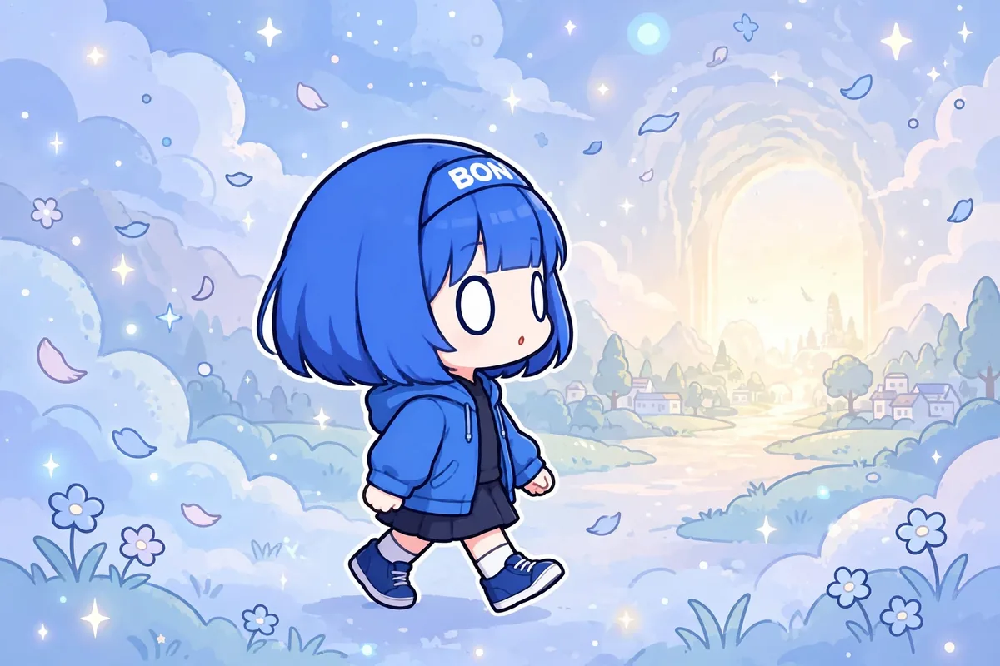
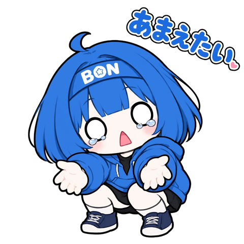
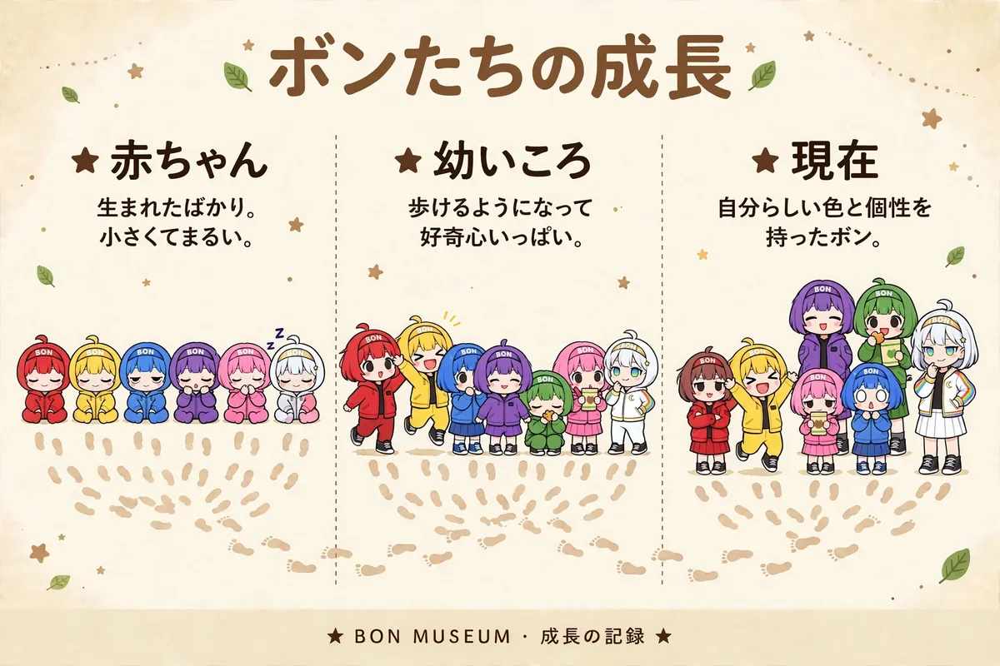
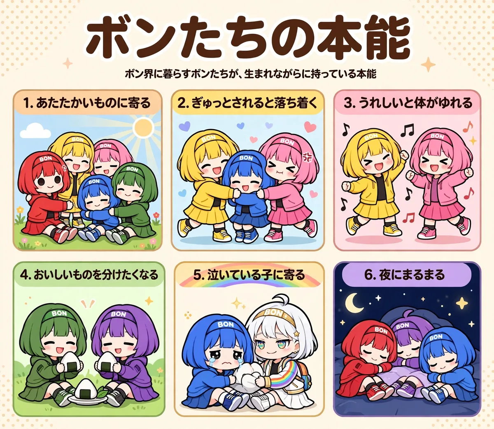
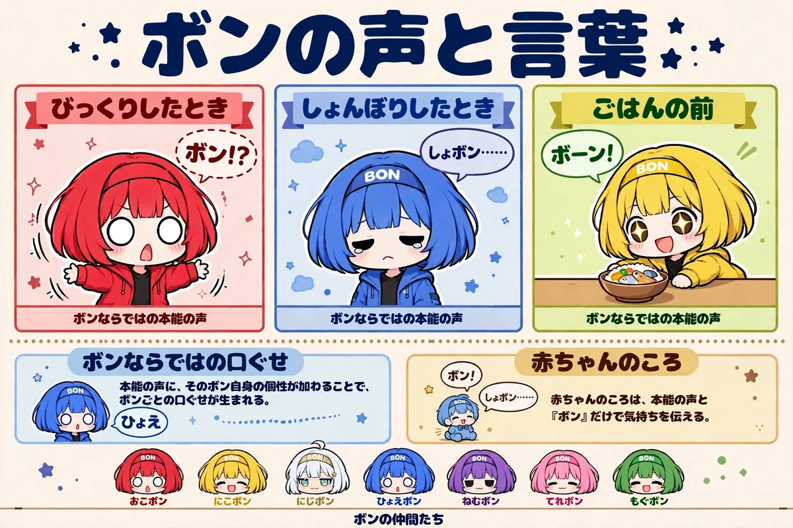
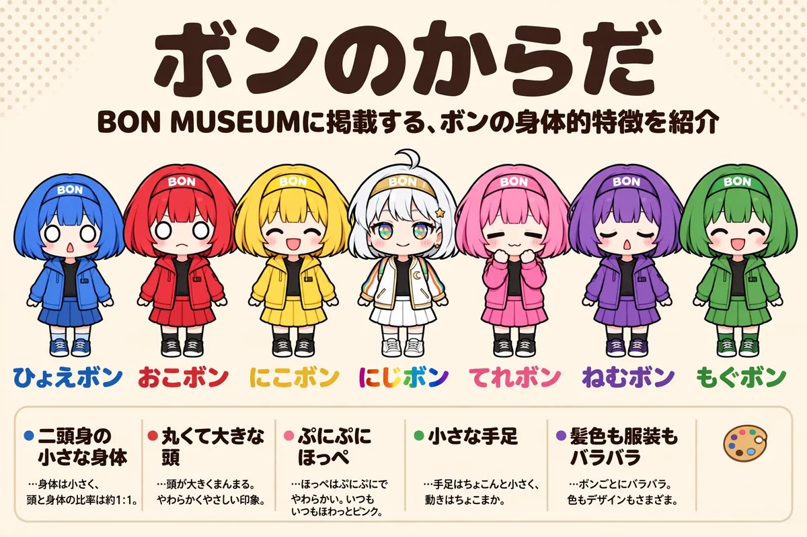
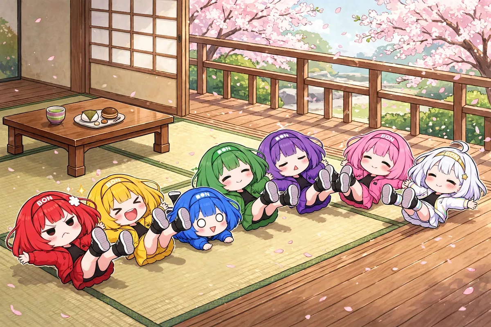
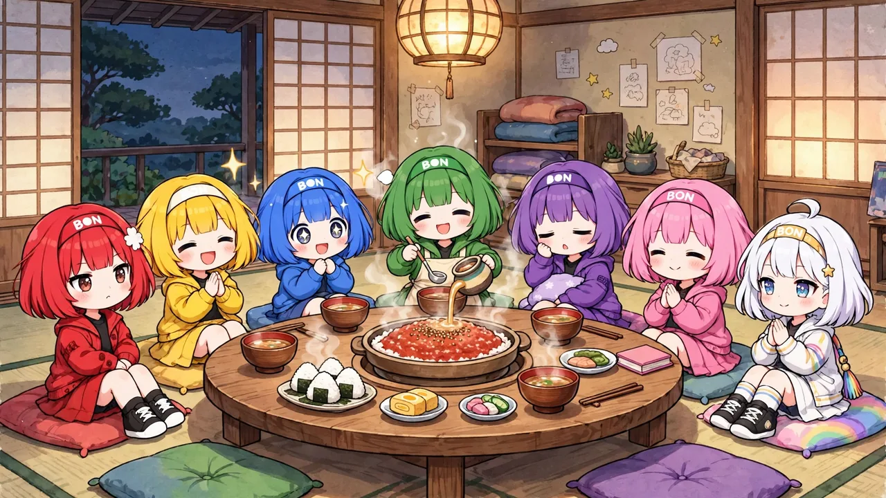
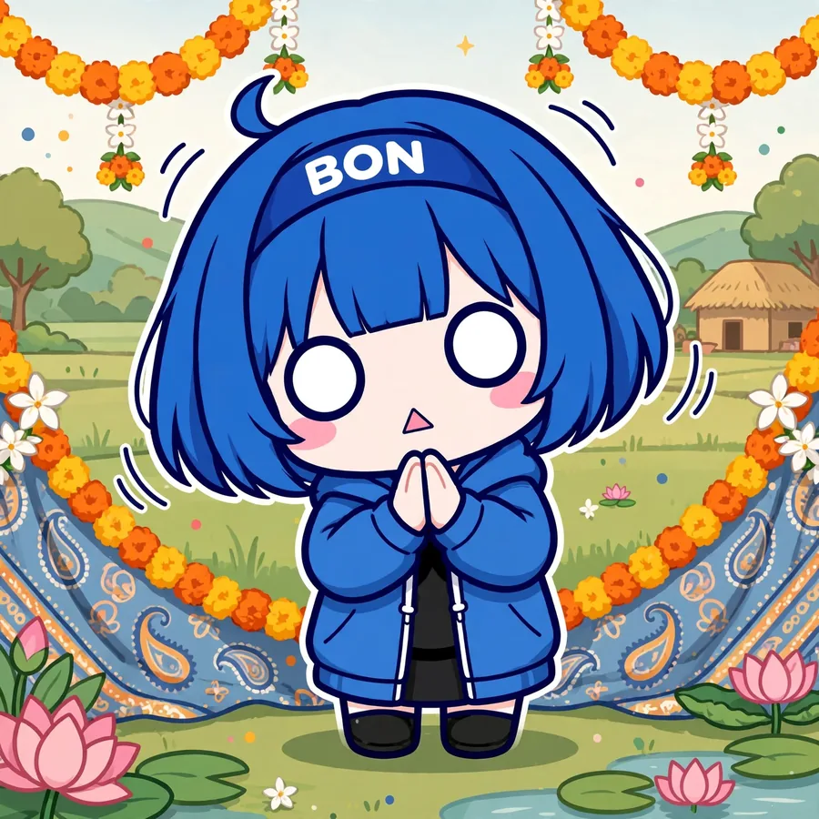

ボンの世界
ボンたちが暮らす世界の名前は「ボン界」。人間の世界とは別に存在する世界だ。
国や街は、現実の地球をモデルにした架空のもの。自然や文明も、地球によく似ているぞ。
時間の流れは人間の世界と同じで、住人はみんな二頭身だ。
いわば、人間が「ボン」になったような世界なのだな。
学校・会社・病院・お店・役所・電車・インターネットなど、人間の世界にあるものは、ボン界にも存在している。
ただし、現実の世界と似ているだけではない。ボンならではの文化や決まりもあるのだ。
WORLD
ボン界とは
うむ、よく来たな！
ここでは、我輩たちが暮らす「ボン界」について教えてやろう。
ボンたちが暮らす世界の名前は「ボン界」。人間の世界とは別に存在する世界だ。
国や街は、現実の地球をモデルにした架空のもの。自然や文明も、地球によく似ているぞ。
時間の流れは人間の世界と同じで、住人はみんな二頭身だ。
いわば、人間が「ボン」になったような世界なのだな。
学校・会社・病院・お店・役所・電車・インターネットなど、人間の世界にあるものは、ボン界にも存在している。
ただし、現実の世界と似ているだけではない。ボンならではの文化や決まりもあるのだ。
それでは、我輩の仲間たちをひとことずつ紹介しておこう！
みんな個性豊かで、それぞれ違った魅力を持っているのだ。
詳しいことは「ボンたちのずかん」で確かめてくれ！
ちなみに我輩には、新しいボンが生まれる気配を感じ取る不思議な力がある。
ふふん、これも我輩ならではの特別な力なのだぞ！
ほかの 展示へボンたちの ずかん
ボンの一生
ボンは、人間の赤ちゃんのように生まれるわけではない。
ここが少し不思議なところだぞ。
ボンは人間の感情や想像力から生まれ、元になった人の精神世界を通り抜ける。そして、自分で見つけた出口からボン界へやってくるのだ。

ボンは、人間の感情や願いが想像力によって形になることで生まれる。
ひとりの人間から、たくさんのボンが生まれることもある。ひとりで生まれる子もいれば、何人かいっしょに生まれる子もいるぞ。
もちろん、人間のように出産するわけではない。
ボンたちは、自分が「感情や願いから生まれた」ということを本能的に理解している。しかし、元になった人間の名前や顔、記憶までは知らないのだ。
ボン界には、こんな言い伝えがある。
「流れ星が落ちた夜に、新しいボンが生まれる」
しかし、実際には新しいボンはいつでも生まれる。流れ星が落ちる夜だけとは限らないのだ。
ただし、ひょえボンが生まれた夜には、言い伝えどおり星が落ちたそうだぞ。
ふむ、不思議な偶然だな。あるいは、何か意味があるのかもしれんな。
生まれたボンは、すぐに元になった人間の「精神世界」へ移る。
精神世界の景色や雰囲気は、その人の気持ちに影響される。しかし、ボン自身の性格や意志が変わることはないぞ。
精神世界の形や時間の流れ、出口の数は人によって異なる。
出口は、ドアのような形をしているわけではない。光が差したり、景色が変わったりすることで、自然にあらわれるのだ。
気づけば、明るくなっていく方へ歩いている。そんな不思議な場所なのだな。
精神世界での出来事や記憶は、ボンたちの中にきちんと残る。
また、同じ人間から同時に生まれたボンどうしは、精神世界の中で「ボン」の声や気持ちを通じて、お互いに意思を伝え合うことができるぞ。
ボンは自分の意志で出口を見つけ、そこを通ってボン界へ出ていく。
出口を抜けると、森や街など、ボン界のさまざまな場所に突然あらわれるのだ。
ただし、出口を見つけたからといって、すぐに通らなければならないわけではない。精神世界にとどまり続けることもできるぞ。
ボンが生まれた瞬間は、まわりにいるボンたちにも、元になった人間にも気づかれない。
ボン界の住人に見つけられるのは、精神世界の出口を抜けて、ボン界にあらわれたときなのだ。
つまり、ボンが生まれたことを誰かが知るのは、ボン界にやってきてからというわけだな。
ボン界にやってきたばかりのボンは、まだ食べ方も寝方も知らない。
話せる言葉も「ボン」だけ。まるで人間の赤ちゃんのように、しばらくは「赤ちゃん期」を過ごすのだ。
その間は、まわりのボンたちが自然に世話をしてくれる。
食べ方や寝方、言葉や日々の暮らしを、少しずつ教えてもらいながら成長していくぞ。
ふむ、新しい仲間を迎え、みんなで育てていく。これもボン界の大切な習慣なのだな。
ボンの赤ちゃんについて、我輩が教えてやろう。
ふふ、かわいいのである！
ボンの赤ちゃんとは、生まれたばかりのボンが過ごす「赤ちゃん期」の姿のことだ。
生まれたあと、しばらくのあいだは人間の赤ちゃんのように過ごすのである。
呼び名は「ボンのこ」や「ちびボン」だぞ。

この絵に描かれているのは、ひょえボンの赤ちゃん時代。
「あまえたい」と、両手を広げているところだな。
ふふ、実に愛らしい姿である。
ひょえボンをいちばん最初に見つけたのは、この我輩、にじボンだ。
初めて話した言葉は、びっくりしたときの「ひょえ！」だった。
これが「ひょえボン」という名前のもとになったのだぞ。
「ひょえ」は、ひょえボン自身の個性として生まれた声。他のボンたちが、同じように使うわけではない。
ひょえボンのほっぺたは、むにむにとよく伸びる。
みんなから、つんつんされたり、ぐにょーんと伸ばされたりしていたな。
びっくりすると、目が「○」、口が「△」になる「○△○」の顔をするのだ。
だっこをやめると泣いてしまうので、みんなが交代でだっこしていた。
高いところもこわくて、誰かの手をなかなか離さなかったぞ。
大きな音にびっくりして目を覚まし、そのまま泣いてしまったこともある。
まったく、手のかかる赤ちゃんだったな。ふふ。
ひょえボンが生まれたばかりのころのお話は、「ひょえボンの はじめての おうち」で読めるぞ。
ボンの見た目は、赤ちゃん期になっても変わらない。
つまり、体の大きさだけで赤ちゃんかどうかが決まるわけではないのだ。
見た目ではなく、生まれてからの成長段階によって決まるのである。
赤ちゃんボンは、しぐさや言葉で見分けられる。
甘えん坊で、まだ言葉もたどたどしいのだ。
甘えたいときには「ぼん…」と小さく鳴き、手を広げてだっこを待つこともあるぞ。
お世話は街のみんなで行う。7人のボンたちも、みんな赤ちゃんには手なずけられてしまうのだ。
赤ちゃん期に決まった期間はない。いつのまにか成長し、大人になっていくのである。
ほやほやボン期には、こんなことができるぞ。
気持ちは、しぐさや表情によくあらわれる。
まだ言葉で気持ちを伝えるのは苦手。表情やしぐさで語ることが多いのだ。
おにぎりを見ると、目をきらきらさせて「ボーン！」と声が出る。
寝るときは、誰かの指をぎゅっと握っているぞ。
夜になると、おだんごのように丸まって眠るのだ。
ほやほやボン期に話せる言葉は「ボン」だけ。
声の高さや長さを変えることで、自分の気持ちを伝えている。
また、その子特有の口癖が名前の由来になることもある。
たとえば、「ひょえ」と言うクセから「ひょえボン」という名前になったのだ。
ふむ、まだ言葉は少なくとも、伝えたい気持ちはいっぱいあるのだな。
ひょえボンの 赤ちゃん時代の おはなし(小説)は、こちら。
ひょえボンの はじめての おうちを読むほかの 展示へ小説「ひょえボンの はじめての おうち」
ボンは、成長しても見た目や体つきはずっと変わらない。
しかし、心や活動、言葉づかいは、7つの成長段階に合わせて少しずつ変わっていくのだ。
うむ。見た目だけでは成長がわからないというのも、ボンの不思議なところだな！

ボンの成長は、見た目ではなく、しぐさや言葉づかい、できることの変化でわかる。
成長段階は全部で7つあるぞ。
ちなみに「ちびボン」は、赤ちゃんや幼いボン全般を指す呼び名としても使われている。
成長段階ごとに、決まった期間はない。
「できることが増えたね」と、まわりのみんなが気づいた日が、次の段階へ進むタイミングなのだ。
本人も、いつのまにか自分の成長に気づくぞ。
現在の7人の成長段階は、次のとおりだ。
ひょえボンは、これからゆっくり大人になっていくところなのだ。
生まれたばかりの、赤ちゃんらしい時期。
少しずつ自分でできることが増えてくる時期。
自分で考え、行動することが増えてくる時期。
世界が新しく見え、何もかもが輝いて感じられる時期。
自分の得意なことを仕事にして、自分の居場所を見つける時期。
経験を重ね、まわりを支える側になっていく時期。
さまざまな経験を重ね、穏やかに過ごす時期。
ふむ。どの段階にも、それぞれの楽しみや役割があるのだな。成長とは、ただ年を重ねることではないというわけだ。
ボンの成長は、できることや言葉づかい、気持ちの表し方にもあらわれる。
ここでは、それぞれの成長段階でどんな暮らしをしているのか、我輩が詳しく紹介してやろう！
成長段階が進むと、ボンの暮らしにも少しずつ変化があらわれる。
成長はうれしいことだが、今までの自分から変わっていくことに、少しさびしさを感じることもあるのだな。
成長段階が進んだことに最初に気づくのは、本人ではなく、まわりのみんな。
しぐさや口ぐせ、泣く回数、できることの変化を見て、
「あれ、育ったね」
と気づくのだ。
成長に気づいたら、本人にはないしょでお祝いの準備をする。
もぐが小豆を煮て、お赤飯を炊く。みんなで居間を飾りつけて、特別な日を迎えるのだ。
お赤飯の日は、みんなで成長をお祝いする、ちょっと特別な会。
主役のボンは、みんなからひとことずつ、お祝いの言葉をもらう。
本人は、その日になって初めて、自分の成長段階が進んだことを知るのだ。
うれしい気持ちと、少しさびしい気持ち。ふたつの気持ちが、いっしょにやってくるのである。
成長のお祝いについては、「ひょえボンの はじめての お赤飯」で読めるぞ。
最後に、ひとつ覚えておいてほしいことがある。
ボンは成長しても、すべてが変わるわけではないのだ。
成長しても、そのボンらしさの根っこは変わらない。
うむ。姿が変わらなくとも、経験を重ねて、それぞれの道を歩んでいく。それがボンの成長なのだ！
ボンの本能
ボンには、だれにも習わなくても、生まれたときから身についている「本能」があるのである。
ボンの本能や行動は、大きく3つに分けて考えることができるぞ。

本能と習慣は、べつのものなのである。では、ひとつずつ見ていこうではないか。
だれにも教わらなくても、ボンが自然にしてしまう行動である。
気持ちやまわりからの刺激によって、無意識に体にあらわれる反応である。
びっくりすると「ボン!?」、しょんぼりすると「しょボン……」、ごはんの前では「ボーン！」と声が出る。
これは、ボンという種族みんなに共通する本能の声なのである。
ボンならではの口ぐせは、この本能の声に、そのボン自身の個性が加わったものだ。
たとえば、ひょえボンの「ひょえ」は、びっくりしたときに出る声から生まれた口ぐせなのである。
赤ちゃんのころは、この本能の声と「ボン」だけで気持ちを伝えているぞ。
くわしくは「ボンの声とことば（本能の声と口ぐせ）」を読んでみるとよい。

ボンたちの暮らしや文化の中で、自然と身についた行動である。
生まれつきの本能とは違って、生活の中で覚えていくものだ。ここは間違えやすいところなので、よく覚えておくとよいぞ。
大人のボンもふつうに使う、ボンの掛け声である。
どの掛け声をよく使うかは、ボンごとに違う。なかなか個性が出るところだな。
ボンは見た目こそ成長しないが、成長段階によって強くあらわれる本能が違うのである。
ほやほやボン期・ちびボン期・のびのびボン期のボンに見られる本能だ。
おとなボン期・べてらんボン期・おだやかボン期のボンに見られる本能だ。
ボンは、自分が「感情や願いから生まれた」ことを、本能で理解しているのである。
しかし、元になった人の名前や顔、記憶までは知らない。
本能は、だれかに習ったり、あとから覚えたりするものではない。生まれつき身についている、自然な気持ちや行動の動きなのだ。
そして、本能は大きくなってもなくならないのである。
眠ると、体が自然と「まるまる」になる。夜になると、おだんごのような形になって眠るのである。
寝言は「ボン……」。
眠りの深さはボンごとに違う。ねむボンはぐっすり眠るけれど、ひょえボンはちょっとした物音でも目が覚めやすい。
うれしい夢には、あかるい色がついているぞ。
ボンのほっぺは、ほんのりあたたかい。うれしいと、もっとあたたかくなるのである。
さわると、おだんごのようにやわらかい。実に興味深い特徴だな。
ボンはみんなが同じ反応をするわけではない。
ふむ、こうして見ると、同じ本能を持っていても、あらわれ方はずいぶん違うものだな。
本能はボンみんなに備わっている。しかし、そのあらわれ方はそれぞれなのである。
これで本能の解説はおしまいだ。諸君も、身近なボンたちの行動を観察してみるとよい。思いがけない本能が見つかるかもしれぬぞ。
ボンの身体と生命
ボンの身体について、我輩が語ろう。二頭身は、愛らしいだけでなく、いろいろと理にかなっているのだぞ。

ボンの身体には、いくつかの特徴があるのである。

ボンは老化せず、身体つきも変わらない。不老不死の種族なのである。
病気にかかったり、ケガをしたりすることはある。しかし、病気・事故・ケガ・年を取ることが原因で命を落とすことはない。消えてしまうこともない。
「おだやかボン期（老年期）」は、身体が老いる段階ではなく、心と暮らしが成熟した段階のことだぞ。
ボンたちの服装は、季節によって変わるのである。
髪や服の色は、元になった感情のイメージによって決まる。
ただし、これは決まりではない。色は平均で決まるものではなく、ボンそれぞれに違いがある。決まった対応表もないのである。
どの色も特別なもの。色によって優劣をつけることはないぞ。
ボンは命を落とすことも、消えてしまうこともない。だからこそ、ボン界には独特の別れ方や時間の考え方があるのである。
ボン界には、ボンたちが気持ちよく暮らすためのあいさつやマナーがある。
ボンの基本的な気持ちは、人間と同じである。ただし、ボンならではの表し方もあり、気持ちは人間より強く表に出やすい。
性格は、生まれつきの部分と経験によってできている。
生まれつきの性格は、元になった感情の種類が土台になる。基本的な性格は、成長してもあまり変わらないのである。
声の高さや言い方は、ボンによって違うぞ。
ここからは、ボンという種族について、もう少し詳しく見ていこう。
気持ちは、身体にもあらわれる。成長段階によって、身体の特徴にも違いがあるぞ。
ボンどうしの相性にも、それぞれ特徴がある。
ふむ、ボンの身体と生命について、ずいぶん詳しく紹介できたな。
二頭身の小さな身体には、ボンならではの仕組みがたくさん詰まっている。命を落とさず、長い時間を生きるからこそ、記念日や思い出、だれかと過ごす時間を大切にしているのである。
諸君も、ボンたちの暮らしを観察してみるとよい。何気ないしぐさにも、種族ならではの秘密が隠れているかもしれぬぞ。
名前と言葉
ボンの名は、すべて「○○ボン」の形をしている。我輩の名も、そうだぞ。
名前には、その子だけの意味がある。そして、言葉には地域ごとの違いや、ボンならではの文化があるのである。
ボンの名前には、いくつかの決まりがある。
名前は、ボンにとって自分自身を表す大切なものなのだ。
ボンが使う言葉は、人間の世界と同じである。
大人のボンも、うれしいときには高い声で「ボン↑」、さびしいときには低い声で「ボン↓」と言うことがある。
これは、赤ちゃんのころに使っていた言葉の名残りなのである。
ボン界には、暮らしの中から生まれたことわざがあるぞ。
天気や自然にまつわることわざもある。
どれも、ボンたちの暮らしや自然とのつながりを感じさせる言葉だな。
食事の前には、人間の「いただきます」と同じ意味で、みんなで声をそろえて「ボーン！」と言うこともある。
食卓を囲むボンたちの、にぎやかな声が聞こえてきそうである。
いろどり町のボンたちは、梵京に近い、やわらかい標準語を話す。
とくべつな語尾はなく、自然で親しみやすい話し方なのである。
一方、地方では「〜だべ」「〜だっぱ」のような、ゆるい語尾が使われることもある。
どの地方で使われているかは、まだ決まっていないぞ。
ふむ、名前も言葉も、ボンたちが暮らしていく中で大切にしているものなのである。
同じ「ボン」という名前の形でも、その子の名前はひとつだけ。話す言葉も、住んでいる場所や経験によって少しずつ違う。
なかなか興味深い文化だと思わぬか？
ほかの 展示へBonpedia（ボンペディア）
ボン界の暮らしと社会
ここは 一般向けの かんたんな まとめだよ。くわしい 設定は 「ボン界の しゃかい しりょう」へ。
ふむ、ボン界の暮らしについて知りたいのであるな。
ボン界の暮らしは、人間の世界とよく似ている。大きな違いは、住んでいるのがみなボンであるというところだ。
学校や仕事、お店、病院、交通機関など、日々の暮らしに必要なものがそろっている。人間の世界と似ているところもあれば、ボンならではの文化や仕組みもあるぞ。
ボン界は、助け合いを大切にしながら、ひとりひとりの自由も尊重する社会である。
家族は血のつながりではなく、おたがいの気持ちで作る。親子やきょうだいのような関係も、自由に結ぶことができる。
国や地域ごとに政府があり、国の数は現実の世界と同じくらい。街のことは、代表を決めずに、みんなで集まって話し合って決める地域もある。
共通のお金は「ボン」。見た目や使い方は、現実の日本の円に近い。
犯罪はとても少ない。あるとしても、小さな盗みやものをこわす程度で、大きな事件はほとんどない。国どうしの戦争も起きない。
困ったときは、地域のみんなで助け合う。悪いことをしてしまったボンにも、罰するだけではなく、立ち直れるように手を差し伸べるのである。
学校は人間の世界に近いが、小さくて、好きなときに通えるゆるやかな仕組みになっている。
入学する時期は自由で、年齢の決まりもない。のびのびボン期の子も、通いたいと思えば学校へ行くことができる。
勉強は順位や競争よりも、その子の得意なことや好きなことを大切にする。教科は「かんじ・さんすう・ことば」の3つ。自分が学びたいところから、自分のペースで進めていく。テストの順位をつけることもない。
学校には、とくべつな部活動はない。そのかわり、好きなことをするために集まる「すき会」がある。順位や競争をつけないボン界の考え方に合った集まりであるな。
仕事は義務ではなく、働かないという選択もできる。基本的な暮らしは守られているので、無理に働く必要はない。
仕事は、まず「やってみる」ところから始まる。バイトなどを通して、自分に合う仕事を見つけていくのである。
現金や銀行、電子決済もあり、農業・漁業・医療・福祉・サービス業など、さまざまな仕事がある。
ちびボン期の子を中心にした町営の「ようちえん」もある。好きな日に、好きなだけ通って、あそび・おえかき・おひるごはん・おひるね・おうたなどを楽しむ場所だ。
学校のお昼ごはんは、お弁当を持ってくるか、先生といっしょに食べる。
先生ボンは、ボンたちの先輩にあたる存在。子どもたちを見守りながら、勉強や暮らしを教える仕事をしている。
ボン界では、現金・銀行・電子決済が使われている。
硬貨は丸い形で、ボンの顔が描かれている。ただし、特定の誰かの顔というわけではない。
電子決済の名前は「BonPay」。商店街の「やおもぐ」でも使うことができる。
おこづかいは、おてつだいをするともらえる。ちびボン期の子も、商店街で買い物をするぞ。
おやつの値段は、だいたい100〜300ボンくらいである。
ボン界には電気・水道・ガス・インターネットがあり、スマホやテレビ、SNS、動画、ネット通販も利用されている。
一方で、AIはあまり広まっておらず、ロボットは主に研究用。宇宙開発も、ほとんど行われていない。
気候や季節、生き物は地球に近い。自然災害や環境問題はとても少なく、自然との共存を大切にしている。
食べ物は人間の世界とほぼ同じ。おやつも夜食もあるぞ。食事や行事については、次の展示で詳しく紹介しよう。
ボン界の食べ物は、人間の世界と同じである。
ごはんを食べる時間に決まりはなく、おなかがすいたら食べる。ボンは食べないと元気がなくなるので、食事は大切なのだ。
7人のボンたちのごはんは、もぐボンがだいたい作っている。ほかの子も、できることは手伝うぞ。
7人は、白いごはんに白ごまをかけた「胡麻かけ飯」とお赤飯が好き。雑炊も大好物で、雑穀米も食べる。
ごまは万能調味料だと思っているらしく、サラダやお肉にもよくかけている。
ただし、好きな食べ物はボンを生み出した人間によって変わる。7人と同じものが、ほかのボンにも好まれるとはかぎらないのである。
お赤飯のほかにも、おせちや月見だんごなど、季節の行事に合わせた食べ物を楽しむ。
ごはんの時間は決まっていない。おなかがすいたら食べるのが基本だ。
ごま・うめ・しゃけなど。好きな具はボンによって違う。
共同農園で野菜がたくさんとれたときは、みんなでつけものにする。収穫が多いときの定番だ。
朝ごはんの定番。家には、ごはんといっしょに食べるおかずや漬物など、いろいろな「ごはんのとも」がある。
ボン界には、さまざまなおやつがある。
おやつの値段は、だいたい100〜300ボンくらい。
食事の前には「いただきます」と言う。みんなで声をそろえて「ボーン！」と言うこともあるぞ。
ボン界では、栄養だけでなく「だれと食べたか」も大切にされている。ごはんを作ってくれたボンには、みんなが感謝するのである。
行事は人間の世界と同じように、お正月やクリスマスなどがある。みんなで素直に楽しむが、ときにはドタバタすることもあるようだ。
ボン界には、本能や暮らしにちなんだ独自の行事もある。
いろどり町のお祭りは、公園で開かれる。
夏のお祭りには浴衣を着て出かけ、みんなで花火を見る。屋台の食べ物も楽しみのひとつだ。
ボン界にも、音楽・映画・マンガ・ゲームなど、人間の世界と同じような娯楽がある。
ゲームセンターやカラオケ、温泉、銭湯、図書館などもあり、博物館・美術館・水族館・動物園は地域によって差がある。
毎日おふろに入り、歯をみがいて、髪を洗う。化粧をするボンは少なく、髪型もあまり変えない。
車やバスは、ボンの体に合わせた特別な形になっている。電車や自転車も、ふつうに使われているぞ。
にこボンの職場。うれしいと体がゆれる本能にちなんで、歌やダンスが好きなボンも多い。
二頭身の体に合わせて、低い場所でも遊べるクレーンゲームなどがある。
遊びのルールは、自分たちで決める。のびのびボン期になると、ともだちと相談してルールを作れるようになる。
子どもたちは、しりとりや「あっち向いてホイ」のような遊びをよくする。
「あっち向いてホイ」は、ボン界では「あっち向いてボン」と呼ばれているぞ。
ボン界の1年は約365日、1週間は7日、1日は24時間。時間の流れは人間の世界と同じである。
ボンは人間の感情から生まれるため、年代や歴史も人間の世界と同じように続いている。ボンは生まれてからの年数を年齢として数えるが、老化はしない。
人間が感情を持つようになったときから、ボンは存在している。
いちばん最初のボンは、はるか昔の伝説として知られているが、詳しいことはわかっていない。そのボンの誕生日は「種族の誕生日」と呼ばれている。祝うかどうかは国によって違う。
いろいろな感情から生まれたボンたちが集まり、いっしょに暮らし始めた場所が梵本のはじまり、という言い伝えがある。
ただし、いつごろの出来事なのかはわかっていない。
昔のボンたちは、はじめは「ボン」という声だけで気持ちを伝えていた。そして、暮らしの中で少しずつ言葉が増えていった、という言い伝えがある。
生まれたばかりのボンが、最初は「ボン」だけを話すことを思い出すな。言葉が増えていく流れは、赤ちゃんのころと同じなのである。
ふむ、こうして見てみると、ボン界は人間の世界とよく似ていながら、ボンたちの本能や考え方が暮らしのあちこちに息づいている世界だとわかるだろう。
助け合い、好きなことを楽しみ、おいしいものを分け合う。そんな日々の積み重ねが、ボン界の社会を作っているのである。
我輩たち七人の、日々の暮らしを紹介しよう。にぎやかで、あたたかな家だぞ。
7人は、公園の近くにある大きな家で、いっしょに暮らしている。
部屋はそれぞれ個室があるが、ねむボンはどこでも寝てしまうので、決まった寝場所があるような、ないような……。
ひょえボン以外の6人は、それぞれの特技を活かしたバイトをしながら、のんびり暮らしている。ひょえボンはまだ子どもなので、バイトはしていない。日課にも、とくに決まりはないぞ。
掃除はみんなで分担している。おこボンがチェック役で、きれいにできているか確認するのだ。
7人みんなの大好物は、お赤飯。お祝いの日には、みんなで食べるのである。
部屋を見れば、その子が何を好きなのかが、ひと目でわかるのである。
町には、手紙を届けてくれる配達員の「ふみボン」がいる。ものしりで聞き上手で、配達しながら、ひとりひとりの話にじっくり耳をかたむけてくれるのだ。
にじのゆと八百屋「やおもぐ」の前には、町の「おしらせ板」がある。町のみんなが、ここで大事なことを知らせ合っているぞ。
遠くのボンへは、「またね」の手紙を書く。ごはんのおくりものを添えることもあるのである。
いろどり町には、我輩たち七人のほかにも、町をささえてくれるボンがいるのである。
にじボンは7人の中でいちばん最初に生まれた。新しいボンが生まれる気配を感じ取れる不思議な力を持っており、みんなを見守る役目をしている。
ほかの6人は、きょうだいのような関係だ。
この大きな家は、いろどり町のボンが譲ってくれたものである。
10月29日に公園で生まれた5人、おこボン・にこボン・もぐボン・ねむボン・てれボンは、生まれてすぐに自然とひとかたまりになった。
ひょえボンは、こけの森にあらわれた。生まれた気配に気づいた我輩が探しに行き、見つけたひょえボンと手をつないで、この家まで連れてきたのである。
そのときのお話は「ひょえボンの はじめての おうち」で読めるぞ。
ボンどうしの仲良し関係は、ずかんにまとめてあるぞ。
7人のバイト先は、ずかんの一人ずつのページで紹介している。
休みの日の過ごし方も、それぞれ違っている。
10月29日は、公園で生まれた5人、おこボン・にこボン・もぐボン・ねむボン・てれボンの誕生日である。
7人はこの日を「ごにん記念日」と呼び、みんなでお祝いする。
大きな家は、むかし町のボンが譲ってくれたもの。今の7人の家になるまでには、ちょっとしたお話があるのだ。
朝ごはんは、もぐボンが台所で作る。
ねむボンはなかなか起きてこない。朝のあいさつは「おはボン」だ。
夜は銭湯か家のお風呂に、順番に入る。
寝る前には、ひとりずつ「おやすみ」とあいさつする。ねむボンは、居間でそのまま寝てしまうこともあるぞ。
料理はもぐボンが担当。洗濯はみんなで協力して行う。ひょえボンも、小さなお手伝いをする。
お赤飯の日の飾りつけは、みんなでいっしょにやるのである。
食事は居間の大きなちゃぶ台で、みんなそろって食べる。
「いただきます」は、みんなでいっしょに言う。食卓を囲む時間も、7人にとって大切なひとときなのだ。

7人の家には、いくつかの小さな決まりがある。
どれも難しいことではないが、みんなで気持ちよく暮らすための習慣である。
ふふ、7人の暮らしはこんなところだ。
それぞれ好きなことをしながら、同じ家に帰ってくる。にぎやかな日も、静かな日もあるが、みんなで過ごすこの家が、7人の大切な居場所なのである。
ほかの 展示へボンたちの ずかんボンたちと おしゃべり
ボン界の しゃかい しりょう
ここからは、ボン界のしくみを、もう少しくわしく見ていくのである。
法律・住まい・医療・学校・娯楽・言い伝え・メディア・交通・人口・経済・一日の暮らし。さまざまな角度から、ボン界の社会を案内しよう。
下の しりょうは、書いてある ところは そのままで、この 10の わけかたに 合わせて 見つけやすく しているよ。
ボン界の ほうりつと けんり
どんなボンも、ひとりのボンとして大切にされる。
髪や服の色、見た目、成長段階（ほやほやボン期からおだやかボン期まで）によって、扱いが悪くなることはない。
住む場所、仕事をするかどうか、友だち、好きなことは、自分で選んでよい。
気持ちを外に出すことも、しまっておくことも本人の自由。ひとりで過ごす時間を持つ権利もある。
食べること、眠ること、休むことは守られている。
「やってみる」ことも、失敗することも、何度でもやり直すことも、ボンの大切な権利なのである。
ほやほやボン期やちびボン期の子は、「おうちのボン」だけでなく、町のみんなで見守る。
ひとりぼっちで生まれたボンを見つけたら、まず迎え入れ、町の「みまもりさん」に知らせる。
迎えたあとも、新しい暮らしになじめているか、町のみんなでときどき様子を見に行く。これを「ようすみ」と呼ぶ。
小さな子のおさんぽには、さんぽやく・あんないやくがいっしょについていく。
また、子どもが怖がることを無理にさせてはいけない。
小さな盗みや、ものをこわすこと、けんかなどが起きたときは、町の「みまもりさん」がかけつける。
みまもりさんは、見まわり・道あんない・まいご探しなどもする、町の見守り役である。
トラブルが起きたら、まずは「はなしあいのば」へ。町の集会所でちゃぶ台を囲み、関係するボンたちの話を最後まで聞く。
「ごめんね」と理由を小さく伝え、これからどうするか、どうやって直すかをいっしょに決める。
大きな事件はほとんど起きないが、もし起きた場合は、梵京にある「大きなはなしあいのば」で、みんなの前で公平に話し合う。
罰することよりも、立ち直りを助けることを大切にしているのである。
立ち直りの手伝いは、診療所の「こころ外来」や、「やってみる」仕事ともつながっている。
ボン界では、ひとりひとりのプライバシーも大切にされている。
どこに住んでもよい。町を変えても、国を変えても、理由を説明する必要はない。
手続きは、町の役場に「ひっこしました」と知らせるだけ。
引っ越したあとは、となりのボンへ小さなおやつを持ってあいさつに行く。おわけっこの日と同じ気持ちを大切にしているのである。
ほかの国へは、船や飛行機で行くことができる。「ボン」の声は世界で通じるため、言葉の心配は少ない。国によって手続きは少しずつ違う。
困ったことがあれば、相談できる場所がいくつもある。
ボン界の 住まい
ボン界には、さまざまな住まいがある。
ひとりぐらしは、のびのびボン期から始められる。
いきなりひとりで暮らすのではなく、まず「おためし ひとり」で試してみるボンも多い。
みんなで暮らす家も人気がある。ごはんやおそうじは当番制にすることもある。7人の「みんなでひとつのいえ」も、そのひとつだ。
「ひとり」と「みんな」を、行ったり来たりしてもよいのである。
家賃は安めで、おやつ数十こ分くらいで住める。基本の暮らしは守られているため、住まいに困らないようになっている。
町が持っている空き家に、家賃なしで住める仕組み。かわりに、おていれの日の手伝いなど、町のために少し働く。
家を買うときに利用する住宅ローン。ボンはずっと生きるので、返済期間に厳しい決まりはなく、ゆっくり返せばよい。
家の中の家具や設備は、二頭身のボンの体に合わせて作られている。
家族は気持ちで作るため、2〜3人の小さな家も、7人のような大きな家もある。
親にあたるボンは「おうちのボン」と呼ばれる。子どもを迎えたときには、広めの家に引っ越すこともある。
梵京には小さめの部屋が多く、いろどり町には広めの一戸建てが多い。
ボン界には、家を「ゆずりあう」文化がある。使わなくなった家を、必要としているボンに譲るのである。7人の大きな家も、町のボンが譲ってくれたものだ。
ペットも、ボンと同じ二頭身で、ボンの体に合う小さなサイズ。
ペットは「いっしょにくらすともだち」と呼ばれることが多い。
迎える前には、家のボンみんなで話し合う。ごはんやおふろなどのお世話も、当番を決めて行う。
ちなみに、7人の家には今のところペットはいない。
ボン界の 医療と 健康
いろどり町には、小さな診療所がある。
おいしゃさんはしろボン。体のことも気持ちのことも、聞き上手に話を聞いてくれる。
大きな病院は梵京にある。診療所で対応が難しいと判断されたときは、「しょうかいじょう」をもらって受診する。
受付や診察台は、ボンの背の高さに合わせて低く作られている。
診療所とは別に「こころ外来」がある。
気持ちがつらいときや、もやもやが続くときに利用する場所である。
話を聞く、ゆっくり休む、絵や音楽を使うなど、やさしい方法が中心。「たたかう」よりも「いっしょに待つ」ことを大切にしている。
ふらっと立ち寄ってもよい。大きな病気として扱われることは少なく、ひと休みしてから日常に戻るボンが多い。
入院は短いことが多い。風邪や、こころを休めるための入院などがある。
けがはひと晩で治るため、入院が必要になることはほとんどない。
病室のベッドは低めで、夜は小さな明かりをつける。食事には雑炊がよく出る。
面会には、近しいボンがおやつを持って訪れる。食べる量は、おいしゃさんに確認する。
夜にさびしくなったときは、看護ボンが「ともね」をしてくれる。「ともね」とは、そばでいっしょに寝てくれることだ。
退院するときのあいさつは、「さよなら」ではなく「またね」。
町の「くすりやさん」には、ボン用の小さな錠剤やシロップが並んでいる。
市販薬には、ねつさまし・のどあめ・おなかのくすりなどがある。使い方は、くすりやさんが教えてくれる。
風邪で体温が上がったときは、薬といっしょに雑炊やあたたかい飲みものをとる。
リハビリは、転びすぎたあと、長く寝込んだあと、こころが疲れたあとの「ならしあるき」。少しずつ日常に戻っていくための手伝いである。
ボンは年を取らず、命を落とすこともないため、ふつうの意味での「介護」はない。そのかわりに「ひとあし手伝い」という仕組みがある。
体や気持ちが弱ったときに、ごはん・おふろ・おでかけなどを少しだけ手伝ってくれるボン。ずっと世話をするのではなく、元気になるまで支えてくれる。
ボンは老いず、命を落とすこともない。しかし、気持ちや生活の調子を整えることは大切である。
季節の変わり目には「おげんきしらべ」を受ける。体温・ほっぺの色・ごはん・ねむり・気持ちなどを、診療所でゆっくり見てもらう。
おだやかボン期は「老後」ではない。仕事を手放し、好きなことをして、新しいボンを見守るゆったりした時期である。
思い出をノートに残すことも、健康のひとつ。「またね」と言い合えることが、いちばんの薬なのだ。
ボン界の 学校生活
学校へ行く時間は自由。「来たときがはじまり」なので、遅れても気にしない。
午前は教科の時間。かんじ・さんすう・ことばを、自分のペースで学ぶ。順位はつけない。
お昼は、お弁当を食べるか、先生といっしょに食べる。
午後は「すき会」の時間。好きなことで集まり、あそび・おえかき・おうた・ものづくりなどを楽しむ。
帰りのあいさつは「またね」。さよならとは言わないのである。
入学にあたる会。近づいて、小さな声で名前を伝える。あいさつのマナーと同じだ。
入学の時期は自由なので、いつでも開くことができる。
卒業にあたる会。学びをひとくぎりして、仕事や次の学びへ「いってきます」と出かける。
ボンは老いないので、年齢で区切ることはない。「やってみたいことが見つかった」ときが、いってきますのタイミングである。
学校には、いつでも戻れるぞ。
遠足は、町あるきとお弁当が中心。公園や共同農園、こけの森の近くまで行くこともある。
到着したら、お弁当をおわけっこする。
おていれの日には、学校のみんなも町のおそうじを手伝う。
すき会で作ったものや、練習した歌をみんなに見せ合う会。勝ち負けはつけない。
学年はないため、のびのびボン期の子と、きらきらボン期の子が同じ教室にいることもある。
おやつの交換や、ノートの見せ合いも人気だ。
けんかをしたら、「ごめんね」と理由を小さく伝える。はなしあいのばと同じ考え方である。
学校に通うかどうかは自由なので、「行かなきゃいけない」という考え方そのものが薄い。
家・児童館・図書館「こころ文庫」・ようちえんなどでも学ぶことができる。
先生ボンが様子を聞きに家を訪れることもある。必要なら、こころ外来につなぐこともできる。
学校に戻りたくなったら、いつでも戻ってよい。
好きなことや得意なことを、いちばん大切にする。
順位や競争ではなく、「できるようになったね」という変化をみんなで見つけるのである。
すき会は、得意なことを深める場所。上の成長段階のボンが、先生役をすることもある。
ほかのボンの得意なことを見るのも、学びのひとつだ。
ボン界の 娯楽と 趣味
ボン界には、歌やダンスで人気のボンたちがいる。ここでは、ボン界ならではの架空の人気者を紹介しよう。名前はすべて架空である。
7人も、ともだち同士で話題にすることがある。カラオケで歌ってみることもあるぞ。
公園や商店街の広場では、ライブをするバンドもいる。
「ころころバンド」は、ころころ転がるリズムの曲で知られている。
楽器は、ボンの体に合う小さめのサイズで作られている。
ボンのスポーツ大会は、勝ち負けよりも「みんなで楽しむ」ことを大切にする。
低いゴールを使ったボール遊びや、ころころ競走、おいかけっこが人気。
ころんで転がることも含めて、みんなで笑って応援するのである。
テレビ・ラジオ・動画配信があり、歌・ダンス・おりょうり・おしゃべりの番組が人気。
ボンの番組は、ゆっくりやさしく進むものが好まれる。メディアについては、後の章で詳しく紹介しよう。
季節ごとのコーディネートを紹介する雑誌がある。
ボンの体に合う二頭身向けの服が中心で、ヘアバンドのアレンジや、もこもこのマフラーの巻き方も人気の特集である。
ゲームセンターや町の集会所では、対戦会が開かれる。
ここでも順位より「いっしょにあそぶ」ことを大切にする。
ゲームの遊び方やルールをボン自身が決める文化があるため、ルールを作るところから楽しむこともあるぞ。
ボン界の 言い伝え・伝承・迷信
ボン界には、「流れ星が落ちた夜に、新しいボンが生まれる」という言い伝えがある。
ただし、実際にはボンはいつでも生まれる。流れ星が落ちた夜だけに限られるわけではない。
言い伝えのもとになったお話は、「むかし、人間が流れ星に強く願った気持ちから、ボンが生まれた」というもの。
願うのは人間であり、ボン自身が願うのではない。
本当の仕組みは、人間の強い気持ち。流れ星は、その気持ちを思い出させてくれるものだと考えられている。
梵本のはじまりや、ことばのはじまりのように、感情から生まれたボンたちが集まって暮らし始めたお話が語り継がれている。
「いちばん最初のボン」のお話も、はるか昔の伝説として知られている。ただし、詳しいことはわかっていない。
「雨のあとは、虹のごほうび」。
これは、ボン界に伝わる天気のことわざである。
虹を見つけたら、近くの誰かに教えると、いいことがあるといわれている。ひとり占めしない気持ちが大切なのだ。
お守りは、神社で受けるほか、自分で作るボンもいる。
中でも「ごまのお守り」は人気。ごまは万能調味料、というボン界らしい感覚から生まれたものだ。
おやつといっしょに、贈りものとして渡すこともある。
神社やお寺はあるが、特定の神様はいない。自然に感謝することが基本である。
いろどり町の小さな神社には、季節ごとにあいさつに行く。田んぼの実りを表した飾りも置いてある。
お正月の初詣は、「ことしもよろしくね」と自然にあいさつする気持ちで出かける。
春は「はなみのおやつ分け」、秋は「やきいもの会」、冬は「いっしょにまるまる夜」。これらはいろどり町の風習である。
地方ごとに、少しずつ違う風習や迷信もある。どれも「ねがいをこめる」「分けあう」という気持ちが土台になっている。
ただし、どれもあくまで言い伝え。信じるかどうかは、それぞれの自由なのである。
ボン界の メディア
ニュースは「いいことニュース」が中心。
季節の行事・天気・おいしいもの・町の小さなできごとなどが、よく取り上げられる。
悲しいできごと（けがやまいごなど）は、やさしい言葉で伝える。戦争のニュースは流れない。
新聞は朝に届く。天気・町のお知らせ・パズル欄が人気である。
梵京には大きなテレビ局とラジオ局がある。地域ごとにも、小さな放送局があるぞ。
昭和から続くラジオ・テレビの文化も残っている。
番組は、ゆっくりやさしく進むものが好まれる。朝のごはんコーナーや、季節のうた番組が定番だ。
スマホとSNSがあり、「ひとこと」を投稿するのが人気。
ほめあう文化が強く、ひどい悪口は少ない。
顔の写真や家の中の写真は、許可をもらってから載せる。プライバシーを守ることも大切にされているのである。
夜ふかしをしすぎると、翌朝は眠そうになる。ねむボンに親近感を覚えるボンも多いらしい。
名前はすべて架空である。
歌手のほしぞらボン、ダンスのくるりボン、ユニットのおだんごボンズなどが知られている。
詳しくは「ボン界の娯楽と趣味」を見てほしい。
有名人でも、道で声をかけられると「ボン！」と手を振って返すくらいの、ほのぼのした距離感である。
ボン界の 交通と 旅行
いろどり町と梵京を結ぶ「いろどり線」、梵京を一周する「ぐるり線」がある。
梵京と地方の大きな町を結ぶ高速鉄道は「ぼんかんせん」。丸みのある車体で、座席は低めに作られている。
駅弁は、おにぎり系が人気である。
ほかの国へ行くときなどに利用する。
昔は船で行き来していた。船での交流が、国どうしの行き来の始まりである。
機内の座席は、ボンの体に合う高さになっている。ボンの声は世界で通じるため、機内アナウンスでも「ボン」であいさつすることがある。
国内旅行では、温泉・山・田んぼの風景・虹の見える丘などが人気。
海外には、ボメリコ・梵華・ボンタリア・ボンジュルなど、15か国がある。行事に合わせて旅行するボンも多い。
国ごとにあいさつやしぐさが違うので、それも旅の楽しみのひとつである。
駅の改札やホームは、ボンの高さに合わせて作られている。
切符のほか、電子決済のBonPayでも乗車できる。
空港には国ごとの手続き窓口があり、引っ越しや旅行の書類を提出する。迷子になったときは、みまもりさんが助けてくれる。
観光地には、梵京のボンタワー・虹の丘・温泉などがある。
ホテルは、ふわふわのふとんと低いおふろが自慢。朝ごはんには、お味噌汁とおにぎりがよく出る。
おみやげは「おわけっこ」の延長である。
旅行先で見つけたご当地おやつを、近くのボンに分ける。
梵京のごまだんご・やきいも・てづくりおにぎりなどが人気。
「おみやげは買うより分ける」と言われるくらい、もらった側もうれしい気持ちになるのである。
ボン界の 人口と 地域社会
梵本全体のボンは、数十万人くらい。梵京は数万人、小さな町は数百人ほどである。数字は、ざっくりとした目安だ。
ボンは老いず、新しいボンは強い気持ちからゆっくり生まれる。そのため、人口が急に増えたり減ったりすることはない。
ボンは亡くならないので、ある町の人口が減るのは、ほかの町や国へ引っ越したときだけである。
国の大きさや人口は、モデルになった国にゆるく似ている。具体的な数字は決めていない。
大きな国には大きな都市があり、小さな国では町どうしの距離が近い。
数万人が暮らす大都市。ボンタワー・ぼんぼん通り・おいしい横丁がある。マンションや小さな部屋が多い。
数百人が暮らす、やさしい町。一戸建てと共同農園があり、顔見知りも多い。
田んぼや山、温泉がある地域。地方の言葉には「〜だべ」「〜だっぱ」などがある。
ボンは梵京にぎゅっと集まって暮らす一方、小さな町もたくさん点在している。
町の規模は、数百人から数千人くらいがふつうである。
移住する理由は、さまざま。
理由を説明しなくてもよい。引っ越しは自由なので、国をまたいで移るボンもいる。
ボン界の 経済
お金は、世界共通の「ボン」。国が変わっても同じお金を使う。
硬貨の絵柄は国ごとに違う。その国の自然や行事が描かれており、集めることを楽しみにしているボンもいる。
おやつの値段は100〜300ボンくらい。これを物価の目安にする。
基本の暮らしは守られているので、無理にたくさん働かなくてもよい。
ほかの国との行き来には、船や飛行機を使う。昔の船での交流が、国どうしの貿易の始まりである。
梵本からは、お米・ごま・おやつ・服などを輸出する。
ほかの国からは、くだもの・香辛料・織物・お菓子などが入ってくる。ボジプトの甘いお菓子なども人気だ。
おたがいの国のおやつを食べ比べる文化もあるぞ。
商店街には、小さなお店がたくさんある。八百屋の「やおもぐ」、寝具屋、カラオケ店などがその例だ。
梵京には、鉄道・放送局・ゲームを作る会社など、大きな会社もある。
会社でもお店でも、「やってみる」ことから始める働き方が多い。
銀行は「ぼんぎんこう」。電子決済のBonPayともつながっている。
貯金は「ためぼん」が中心。目的を一言書いて、ゆっくり貯めていく貯金の仕組みである。急がず、あせらず続けるのが基本だ。
お金を借りるときも、まずは相談。のんびりローンについても、ぼんぎんこうで相談できる。
ボン界の 一日
ここでは、学生・社会人・おやすみの日の一日を比べてみよう。
ごはんの時間は決まっておらず、おなかがすいたら食べる。毎日おふろに入り、歯をみがくのもボン界の習慣である。
| 時間・行動 | 学生 | 社会人 | おやすみの日 |
|---|---|---|---|
| 起きる | 自分のペースで。のんびり起きる | 朝早め。でも無理に早起きはしない | ゆっくり。寝坊もOK |
| 朝ごはん | お味噌汁とごはん。おなかがすいたら食べる | お味噌汁とごはんのとも | おうちでゆっくり。みんなで食べるとおいしい |
| 出かける | 学校へ。歩き・自転車・いろどりバス | 職場へ。自転車・バス・電車 | 散歩やおでかけ。予定は自由 |
| 午前 | 教科の時間。かんじ・さんすう・ことば | 仕事やお手伝い。やおもぐ・図書館など | 好きなことをする。おけいこ・散歩 |
| 昼ごはん | お弁当か、先生といっしょ | お弁当や近くのお店。ごはんは誰かと | 近所でおべんとうを広げる |
| 午後 | すき会。あそび・おえかき・おうた | 仕事の続き。ちょっと休けいも | 公園・図書館・カラオケなど |
| 買い物・自由 | 帰りに商店街でおやつを買う | 帰りに買い物。やおもぐで野菜を買う | 買い物とおさんぽ。友だちに会う |
| 夕ごはん | おうちのボンと、みんなで | 家のボンと、または友だちと | みんなで作って食べる |
| おふろ・ねる | おふろ・歯みがき・髪を洗って「おやすみボン」 | おふろ・歯みがき・髪を洗って「おやすみボン」 | おふろ・歯みがき・髪を洗って、ゆっくり休む |
※スマホでは、表を横にスクロールして見てほしい。
恋愛と家族
恋も 家族も、ボン界では 気持ちで 結ぶものだ。
我輩は、それが いいと思うぞ。血のつながりや 決まった形に しばられず、それぞれの 気持ちを 大切に できるのである。
恋と 結婚
恋愛感情を 持つボンも、持たないボンも いる。
恋愛も 結婚も、相手の 性別に 関係なく、おたがいの 気持ちで 決められる。結婚しなくても、いっしょに 暮らすことが できるのだ。
ボンの あいだに 子どもは 生まれない。
やきもちや 失恋は、人間と 同じように ある。うわきは 信頼を 裏切ることなので、よくないことと されている。
また、別れたあとも、家族のような 関係を 続けることが ある。
ハグや キスで、親しさや 愛情を 伝えるボンも いるのだ。
告白は、ふたりきりの 場所で「すきだよ」と 気持ちを 伝えることが 多い。
返事を 急がせることは なく、相手の 気持ちを 待つことも 大切に されている。
デートでは、公園を さんぽしたり、おにぎりを はんぶんこしたり、商店街を あるいたり、星を 見たりする。
特別な 場所へ 行かなくても、ふたりで 過ごす時間を 楽しむのである。
結婚式は、小さな 会を ひらいて おこなうことが 多い。
みんなで お赤飯を 食べながら、ふたりの 新しい 関係を お祝いするのだ。
結婚記念日には、結婚した日に ふたりで お赤飯を 食べる。
お赤飯は、お祝いの 気持ちを 分け合う 食べものなのである。
いろいろな 家族の かたち
ボン界では、友達から 家族に なることも ある。
いっしょに ごはんを 食べつづけているうちに、いつのまにか 家族のような 関係に なっていることも あるのだ。
家族の 休日には、公園で ひなたぼっこを したり、銭湯へ 行ったりする。
また、家族だからといって、いつも 同じ家で 暮らすとは かぎらない。
別々に 暮らしていても、「またね」と 声を かけ合い、手紙を 送ったり、ごはんの日に 集まったりして つながっている。
恋愛を しないボンも、結婚を しないボンも、同じボンとして 大切に されているのである。
ボン界の かがくと ぎじゅつ
ここからは、ボン界の 科学と 技術を 見ていくのだ。
研究の 歴史から、発明家・医療・通信・家電・ロボット・宇宙・教育まで、我輩が 案内しよう。
ボン界の 科学研究の 歴史
ボン界の 科学は、「なぜ？」という 小さな ふしぎから はじまった。
研究は ゆっくりと、すこしずつ 発展してきた。急いで 結果を 出すよりも、時間を かけて じっくり 調べることが ふつうなのである。
ボンは ずっと 生きるため、ひとつの ふしぎを 長い 時間を かけて 研究することも できるのだ。
ボン界の 発明家と 研究者
ボン界には、発明や 研究を する ボンが いる。
「ほしよみボン」は、ほしみ台で 星を 観測している ボンである。
研究は 専門の 研究施設だけでなく、学校の「すき会」でも おこなわれる。理科や ものづくりを 好む ボンたちが 集まり、それぞれの ふしぎや アイデアを 形にしているのだ。
ボン界の 医療技術
医療技術には、体温や ほっぺの 色などを やさしく はかる 道具が ある。
診療所で おこなわれる「おげんき しらべ」でも、こうした 道具が 使われている。
ボンの 体に 負担を かけず、安心して 健康を 確かめられるように 工夫されているのである。
ボン界の 通信と インターネット
通信や インターネットの 技術は、人間の 世界と ほぼ 同じである。
電話や メッセージの やりとり、ホームページの 閲覧、電子決済の「BonPay」など、日常生活の さまざまな 場面で 使われている。
遠くに 住む ボンとも、気軽に つながることが できるのだ。
ボン界の 家電と 生活用品
ボン界には、人間の 世界と 同じような 家電が ある。ただし、ボンの 体に 合わせた 小さな サイズに なっている。
低い 台所や 小さな 炊飯器、踏み台つきの 道具など、ボンが 暮らしやすいように 工夫されているのである。
また、ボンは 眠ると「まるまる」に なる。そのため、やわらかい 寝具や クッションなど、まるまる系の 生活用品も 親しまれているのだ。
ボン界の ロボットと 人工知能
ボン界では、ロボットや 人工知能は あまり 発達していない。
科学技術の 研究は おこなわれているが、機械に 生活の 多くを 任せるような 社会には なっていないのである。
ボン界の 宇宙
ボン界では、宇宙へ 出かけるための ロケットは まだ ない。
そのかわり、星を 観測する「ほしみ台」が あり、夜空を 見上げて 星の 動きや 輝きを 調べている。
宇宙へ 行くことよりも、地上から 星を 観測することが 大切に されているのだ。
ボン界の 科学技術の 教育
学校では、「すき会」を 通じて 理科や ものづくりを 学ぶことが できる。
興味を 持ったことを 自分の ペースで 調べたり、道具を 作ったりしながら、科学への 好奇心を 育てていくのである。
ふしぎに 思ったことを、じっくり 調べてみる。その気持ちこそが、ボン界の 科学を 支えているのだ。
ボン界の国と地域
我輩たちの 街があるのは、「梵本（ぼんほん）」という 国である。
日本に よく似た、ゆったりとした 国だぞ。ここからは、梵本の 街や 自然、世界の 国々、そして 少し 不思議な 島まで、我輩が 案内しよう。
梵本の 国と 梵京
ボンたちの 街があるのは、日本に 似た 雰囲気の「梵本（ぼんほん）」という 国である。
使われている ことばは 日本語。季節や 暮らし方も、日本に よく似ている。
首都は「梵京（ぼんきょう）」。とても 大きな都市で、たくさんの ボンが 暮らしている。
梵京の ほかにも、小さな 街が たくさんある。ボンたちの 暮らす いろどり町も、そのひとつなのだ。
梵本の 名物の ひとつは、虹が よく見える丘。にじボンの お気に入りの 場所でもあるぞ。
いろどり町
ボンたちが 暮らしている 街の 名前は「いろどり町」。
街の 真ん中には 大きな 公園があり、その まわりに 住宅や お店、さまざまな 施設が 集まっている。
銭湯や 温泉、図書館、共同農園、小さな 診療所、児童館、町立の 幼稚園も あるのだ。
にぎやかな 商店街には、八百屋さんなどの お店が 並んでいる。もぐボンも、よく 八百屋さんや 商店街へ 買い物に 出かけているぞ。
商店街に ある 八百屋さん。もぐボンが よく 買い物に 来る。店先には、ごまも 置いてある。
店主は「かぶボン」。おしゃべり好きで、もぐボンに 野菜を おまけしてくれることも あるのだ。
高い 煙突に 虹色の 絵が 描かれた 銭湯。
番台を 担当しているのは「ゆげボン」。いつも どこか めんどう見がよく、子どもボンたちにも 人気がある。
本が たくさん 並ぶ 図書館。感情や 願いについて 書かれた 本の 棚も ある。
小さな子から 大きな子まで、みんなが 遊びに 来られる 場所。遊んだり、友達と 過ごしたりできる。
町営の 幼稚園の 正式な 名前。物語の中では、親しみやすく「ようちえん」と 書くことが 多い。
町の 小さな 診療所。お医者さんは「しろボン」。落ち着いた 性格で、ボンたちの 話を よく聞いてくれる。
いろどり町には、みんなに 親しまれている 食べものが ある。
街の 真ん中に ある 大きな公園。鳥や 猫が 暮らしている。
春には 花見、秋には やきいもの会が 開かれる。ボンたちが 集まって 遊ぶ、町の 大切な 場所なのだ。
めだかなど、小さな 生きものが 暮らしている。
野菜を 育てるための 農園。虫や いきものも いて、とれた 野菜は 町のみんなで 分け合う。
ひょえボンが あらわれた 森。くわしい 場所は、まだ 決められていない。
いろどり町には、日本と 同じような 四季が ある。
ただし、季節の 変化は ゆるやかで、極端に 暑くなったり 寒くなったりすることは 少ない。
食べものは 和食が 中心。おにぎりや つけものが よく 食べられている。
季節ごとに お祭りが たくさんあり、大きな お祭りだけでなく、小さな 地域のお祭りも 多い。
共同農園で とれた 野菜を みんなで 分け合うことも、町の 暮らしに 根づいているのである。
ほかの 国々
ボン界には、現実の 世界と 同じくらい たくさんの 国が ある。
どの国も、現実の 国や 地域を モデルにした 架空の 国である。
国どうしの 関係は とても よく、戦争のない 世界だ。
国によって、髪や 服の 色味、気候、食べもの、行事などが 少しずつ 違う。たとえば、寒い国では 色の うすい服や あたたかい セーターが 親しまれている。
国どうしは、留学や 旅行、手紙などを 通じて 交流している。
くわしい 設定が 決まっているのは、次の 15か国。ほかにも 国は あるが、まだ 詳細は 決められていないのだ。
広い大地と 大きな都市が ある国。場所によって 暑さや 寒さが はっきりしている。
あざやかな 色の 服と ジャケットが 定番。ハンバーガー、パンケーキ、ポップコーンが 名物である。
秋には「ありがとうの ごちそう日」が あり、みんなで 大きな ごちそうを 囲む。
大きな大地と 長い歴史を 持つ国。北と南で 気候が 違う。
赤と金の あざやかな 色や、刺繍の 服が 定番。小さな 肉まんや ぎょうざなどの 点心と、お茶が 名物である。
春の はじまりには「はるいちの日」が あり、赤いものを 飾って 家族で 集まる。
あたたかい海と 石畳の町が ある国。やわらかい 暖色の おしゃれな服が 定番。
パスタ、ピザ、ジェラートが 名物である。
「ひろばの おしゃべりの日」には、広場に 集まって 一日じゅう おしゃべりを 楽しむ。
緑ゆたかな 田園と おしゃれな町が ある国。うすくて やさしい色の 服に、ベレー帽を 合わせるのが 定番。
クロワッサン、フランスパン、チーズが 名物である。
毎週「パンの 朝市」が 開かれ、いろいろな パンが 並ぶ。
あたたかい 気候の国。雨の季節には 強い雨が 降る。
色あざやかな 布や 飾りが 定番。カレー、豆のスープ、ナンが 名物である。
春には「いろどりの 水かけの日」が あり、色の粉や 水を かけ合って 笑いながら 楽しむ。
四季が はっきりしていて、冬は しっかり 寒くなる国。
やさしい色の 重ね着が 定番で、冬には もこもこの あたたかい服を 着る。
あつあつの 鍋、のり巻き、キムチが 名物。冬には「つけもの づくりの日」が あり、みんなで キムチを 漬ける。
広い草原と 海が 広がる、のんびりした国。
日に焼けたような 明るい色の 半袖が 定番。バーベキューと フルーツが 名物である。
「おひさまの ピクニックの日」には、外で ごはんを 食べながら のんびり 過ごす。
森と 古い町が ある国。夏は 暑く、冬は 寒い。
しっかりした 生地の ジャケットと、落ち着いた 緑や 茶色が 定番。パン、ソーセージ、プレッツェルが 名物である。
冬の「あかりの 市（いち）」では、広場に あかりを 並べ、あたたかい 飲みものを 分け合う。
日ざしが 強く、夜が おそい国。明るい 赤や 黄色の 服が 定番である。
パエリアと チュロスが 名物。昼には「ゆっくりの おひるね」の 時間が あり、夜になると みんなで 集まって 過ごす。
海と 市場が あり、にぎやかな国。あざやかな 柄や タイル模様の 服が 定番である。
チャイと あまい お菓子が 名物。「ひろばの おちゃ会」では、広場に 集まって みんなで チャイを 飲む。
寒く、雪と オーロラが 見られる国。色の うすい服に、あたたかい セーターを 合わせるのが 定番。
あたたかい スープと 魚が 名物である。
冬の「オーロラを みる夜」には、みんなで 外に 出て 空を 見上げる。
あたたかい 空気と 大きな森が 広がる国。あざやかな 色の 軽い服が 定番である。
豆の煮込みと フルーツが 名物。「おどりの おまつり」では、街じゅうの ボンが 集まって 踊る。
砂漠と 古い遺跡が ある国。白や 砂色の 軽い服と、ひさしの 大きな ぼうしが 定番である。
あまい お菓子と 豆料理が 名物。「星空の 夜会」では、砂漠に 集まって みんなで 星を見る。
高い山と 古い町が ある国。あたたかい 毛織りの カラフルな服が 定番である。
ポテトと とうもろこしが 名物。「山の ありがとうの日」には、山の 恵みに 感謝する。
あたたかい 気候で、水辺が 多い国。明るい色の 軽い服が 定番である。
ハーブのおやつと ココナッツが 名物。「あかりながしの 夜」には、水に 小さな あかりを 流す。
くわしく 決まっている 15か国の あいさつ・服・名物・行事は、「くにごとの あいさつ」に まとめて あるよ。
ほかの 国の ボン
どの国の ボンも、名前は「○○ボン」という 形を している。
国によって 名前の 響きは 少しずつ 違うが、二頭身の 姿は 共通している。
性格は 国によって 決まるものではない。それぞれの ボンに、それぞれの 個性が あるのだ。
ヘアバンドを つけているのは、いまの 7人だけである。
言葉は 国や 地域によって 違う。しかし、「ボン」という 声だけは どこでも 通じる。
「ボン」の 高さや 響きには、国ごとの 特徴が あるぞ。
ボン界に いない人
ボン界には、人間は 住んでいない。
この世界で 暮らしているのは、ボンだけである。
ただし、想像力の 強い人間は、夢の中で ボンを 見ることが あるらしい。
人間の 世界と ボン界は 別々の 世界だが、想像力や 夢を 通じて、ふしぎな つながりが 生まれることも あるのだ。
ボン界の 暮らしの しくみ
ボン界には、車・電車・バスが ある。交通の しくみは 日本と ほとんど 同じだが、車や バスは ボンの 体に 合わせた 大きさや 形に なっている。
住まいは 戸建てと マンションが 混ざっている。ボンの 体に 合わせた 家具や 設備が 使われているのだ。
梵京では 標準語が 使われ、地方では ゆるい 方言が 話されている。
技術は 現実の 日本と ほぼ同じ。スマートフォンや インターネットも 普及している。
ボン界には 神社や お寺が ある。
ただし、特定の 神様を 信仰するのではなく、自然に 感謝することが 基本である。
町の はしっこに ある 小さな神社。季節ごとに ごあいさつに 行くボンも いる。
田んぼの 実りを 表す 飾りが 置かれている。
お寺は「しずかに すごす場所」。気持ちを 落ち着けるために 訪れるボンも いる。
田んぼや 山、虫など、自然に「ありがとう」を 伝える 習慣が ある。
手を 合わせて、小さく「ボン」と 言うのだ。
お正月には、空を 見上げて 自然に ありがとうを 伝える。特定の 神様に お願いするのではなく、自然への 感謝を 大切に しているのである。
祝日は、現実の 日本と 同じである。
ペットとして 犬・猫・鳥などが 暮らしている。ペットも ボンの 体に 合う サイズで、二頭身の 姿を しているのだ。
7人の 家には、いまのところ ペットは いない。公園の 猫や 鳥に 会いに 行くことは あるぞ。
いろどり町の 公園には 鳥や 猫が いて、ボンが こっそり おやつを 分けることも ある。
共同農園には 虫がいて、町の 小川には めだかなどの 小さな 生きものが 暮らしている。のびのびボン期の 子どもたちは、いきものの お世話を することも あるのだ。
梵京と 自然
梵京は、梵本で いちばん 大きな 都市である。
にぎやかな 街並みの中にも、公園や 自然を 感じられる 場所が ある。
梵京で よく知られている 場所の ひとつが「小さな博物館」。梵本の 歴史を 展示している。
街の 外へ 出ると、田んぼや 野原が 広がる 田舎道、山、温泉などの 自然が ある。
人が 多く集まる 大きな駅。ボンの 体に 合った 改札が あり、小さな 駅弁が 名物である。
梵京の 商店街。各地の 名物を 集めた お店が 並んでいる。
いろどり町の 公園よりも 大きな 公園。春には 花見を 楽しむボンたちで にぎわう。
梵京で いちばん高い、ボンの形を した塔。展望台から 虹を 見ることが できる。
梵京で いちばん にぎやかな 繁華街。ゲームセンターや おやつの お店が 多い。
梵京の 食べものの 路地。小さな お店が たくさん 並んでいる。
いろどり町から 梵京駅へ 行く電車。町と 首都を つないでいる。
梵京の 街を ぐるっと 一周する電車。大きな都市の 移動に 使われている。
梵本の 地形と 地図
梵本は、海に 囲まれた 細長い国である。
山と 川が 多く、海辺から 山あいまで、さまざまな 景色が 広がっている。
梵京は 海の近くに ある大都市。いろどり町は、そこから 電車で およそ 1時間の 場所に ある。
いろどり町は、いろどり線で 梵京駅と つながっている。
首都から 少し離れた、自然と 暮らしが 近い町なのだ。
いろどり駅の 近くに ある地区。商店街が あり、八百屋「やおもぐ」も このあたりに ある。
町の 真ん中に 大きな公園が ある地区。7人の おうちも、公園の すぐ近くに 建っている。
町の 小川や 共同農園が ある地区。公園からも 近く、自然と ふれあえる 場所である。
ボンダイル島と メガリス
ボンツの 近くの 海には、「ボンダイル」という 島が ある。
『メガリスシリーズ』の 舞台は、この ボンダイル島である。
この島には、サガ フロンティア2の 世界「サンダイル」を 思わせる 地理や 歴史が 取り入れられている。
サンダイルには、北大陸・南大陸・東大陸という 三つの 大陸が あり、地域ごとに 異なる国や 文化が 存在する。
ボンダイル島にも、古い町並みや 自然、遺跡など、サンダイルの 面影を 感じられる 場所が あるのだ。
サンダイルでは、アニマと 呼ばれる 不思議な力が、術や 人々の 暮らしに 深く 関わっている。
古代文明の 遺跡は「メガリス」と 呼ばれ、各地に 残されている。
また、古代文明が 残した 道具には「クヴェル」という 特別なものが ある。クヴェルには 強い力が 宿っており、発掘や 調査の 対象に なっているのだ。
クヴェルを 探す者たちは「ディガー」と 呼ばれる。遺跡の 探索には 危険も あり、古代文明には まだ 多くの 謎が 残されている。
ギュスボンは、ギュスターヴ13世を モデルにした ボンである。
サンダイルの フィニー王家に 生まれたが、幼いころの 儀式で アニマを 使うことが できず、王宮から 追放された。
その後、鋼の剣を 手にし、やがて 鋼鉄軍団を 率いて 大きな 勢力を 築いていく。
「鋼の13世」と 呼ばれた ギュスターヴの 歩みは、サンダイルの 歴史を 大きく 変えたのである。
ボンダイル島の メガリスシリーズでは、この歴史を もとにした ギュスボンが 登場する。
ウィルボンは、ウィル・ナイツを モデルにした ボンである。
ウィルは、代々 クヴェルを 探す ディガーの 家系に 生まれた。
若いころから 遺跡を 探索し、やがて「タイクーン・ウィル」と 呼ばれるほどの ディガーに なった。
彼は、古代文明の 謎を 秘めた「エッグ」を 追い続けた人物でもある。
ウィルボンは、ジニーの おじいちゃんに あたる。
ナイツ家には、ウィルから 息子のリッチ、そして 孫のジニーへと 続く、エッグを めぐる 長い物語が あるのだ。
メガリスシリーズに 登場する ジニーたちが 二頭身なのは、ここが ボン界だからである。
ギュスボンや ウィルボンも、ボン界では ボンの姿で 描かれている。
サンダイルの 歴史や メガリスの 謎を 受け継ぎながら、ボン界ならではの 姿で 物語が 続いていく。
ずっと前から ヒントは あったんだ。
ボンダイルの 暮らし
ボンダイルでは、中世ファンタジーのような 暮らしが 営まれている。
食べもの・服・家・仕事・あそびは、どれも 中世ふうである。
ここに 書いていない 細かいことは、実際の 中世ヨーロッパの 暮らしに 近いと 考えてね。
仕事も、中世ふうの ものが 中心である。
遺跡や 古い 品を 探す「ディガー」という 職業も ある。
教育・医療・お金・乗りものは、実際の 中世ふうに 近い。
くわしい 決まりは、まだ 細かくは 決めていない。
ボンダイルには、王家が ある。
王家の もとに、貴族や 領主と、ふつうの 住民が いる。身分の 制度は、原作どおりである。
アニマは、万物に 宿る 力である。
術を 使えるのが ふつうで、使えない ボンは めずらしい。
アニマを 使った 道具が、日常に すこし ある。
アニマや 術を 研究するのは、術士たちである。
特定の 神様は いない。自然に 感謝する 気持ちを 大切にしている。
おまじないや 占いが ある。
騎士団や 軍が ある。
武器は、体術・剣・斧・弓・槍・杖など、原作どおりの ものが 使われている。
ペットが 飼われている。
ボンダイルの 住民には、自分たちが ボンという 種族だと いう 自認は ない。
梵京と、ボンたちの暮らす「いろどり町」の えちずだよ。まるいところを タップ(クリック)すると、せつめいが 出るよ。
※ いろどり町は、梵京から 電車で すこし はなれた、畑や 川の ある のんびりした 町だよ。ばしょの ならびは、ざっくりの イメージだよ。「こけの森」は、えちずには のせていないよ(ばしょは まだ ひみつ)。
梵本には、ボンたちが 移動するための 電車が 走っている。
ここでは、電車の 路線や 駅、街の 見どころを 紹介しよう。
電車の ろせん
いろどり町と 梵京駅を つなぐ電車。
町から 首都へ 出かけるときに 使われている。いろどり町の ボンたちにも おなじみの 路線である。
梵京の 街を ぐるっと 一周する電車。
大きな街の 中を 移動するときに 便利な 路線だぞ。
いろどり駅 → こもれび駅 → にじが丘駅 → 梵京駅
梵京駅を 含めて 全6駅。ほかの 5駅は、ボンタワー駅・ぼんぼん通り駅・おいしい横丁駅・こころ通り駅・大公園駅である。
平成時代に 開通した 長距離鉄道。
梵京駅から、ほかの 大きな町へ 行くことが できる。
行き先は、海の町「しおかぜ町」と、山の町「みねあかり町」の2つなのだ。
ボンの 体に 合わせた、小さめの 電車が 走っている。
車内では、みんな 小さな声で おしゃべりを する。周りの ボンに 気を配るのが、いつもの マナーである。
駅弁は、おにぎり系が 人気。小さな おにぎりを 食べながら、電車の旅を 楽しむボンも いるぞ。
梵京と いろどり町には、いろいろな 見どころが ある。
梵京の 場所
人が 多い、大きな駅。ボンの 体に 合った 改札が ある。
小さな 駅弁が 名物で、いろどり線と ぐるり線が ここに 到着する。
梵京で いちばん高い、ボンの形をした塔。
展望台からは、虹を 見ることが できる。
梵京の 商店街。各地の 名物を 集めた お店が 並んでいる。
梵京で いちばん にぎやかな 繁華街。
ゲームセンターや おやつのお店が 多く、いつも ボンたちで にぎわっている。
梵京の 食べものの 路地。
小さな お店が たくさん 並び、いろいろな 味を 楽しめる。
いろどり町の 公園よりも 大きな公園。
春には 花見を 楽しむボンたちが 集まる。
梵京で いちばん有名な 場所の ひとつ。
梵本の 歴史を 展示している 博物館である。
いろどり町の 場所
いろどり町の 駅。
ここから いろどり線に 乗って、梵京駅へ 行くことが できる。
いろどり町の 八百屋さん。
もぐボンが よく 買い物に 来る。店先には ごまが 並んでいる。
店主は、おしゃべり好きな かぶボン。
いろどり町の 図書館。
本だけでなく、大きな 世界地図も 見ることが できる。
いろどり町の 銭湯。
煙突には 虹色の 絵が 描かれている。番台を 担当するのは、めんどう見のいい ゆげボン。
のびのびボン期の 子どもたちが 集まる、木で できた 児童館。
中庭も あり、みんなで 遊んだり 過ごしたりできる。
町営の 幼稚園。
好きな日に、好きなだけ 通うことが できる。
いろどり町の 中心に ある、大きな公園。
鳥や 猫が 暮らしていて、ボンたちが こっそり おやつを 分けてあげることも ある。
おこボン、にこボン、ひょえボン、もぐボン、ねむボン、てれボン、にじボンが 暮らす 大きな家。
居間には 大きな ちゃぶ台が あり、縁側も ある。公園の すぐ近くに 建っている。
めだかなど、小さな いきものが 暮らす 小川。
夕暮れどきには、ひょえボンと にじボンが 一緒に 歩いたことも ある道である。
町のみんなで 野菜を 育てる農園。
虫などの いきものも 暮らしている。のびのびボン期の 子どもたちは、いきものの お世話を することも あるぞ。
梵本の れきし
梵本の 歴史は、日本の 歴史と だいたい 同じである。
ボンたちも、それぞれの 時代を 生きてきたのだ。
ここに 登場する 人物や 名前は、すべて 架空のものであるぞ。
むかしの ボン（古代〜中世）
土器を 作って 暮らすボンたちが いた。
土を こねたり、焼き物を 作ったりする 仕事は、昔から 大切に されていたらしい。もぐボンの ご先祖さまのような ボンも いたのかもしれないな。
貴族ボンたちは、和歌を 詠んだり、十二単のような 重ね着を 楽しんだりしていた。
蹴鞠や 音楽も 盛んだったようだ。ちなみに、昼寝が 一番の 趣味だったという 話も 残っている。
お茶を 点てるボンや、足軽・忍者の 格好をしたボンが 活躍していた。
お茶を 楽しむ文化や、武士の 暮らしが 広がっていった時代である。
武士の 格好をしたボンは、「〜でござる」と 話していた。
百姓ボンも いて、みんなで 畑を 耕し、作物を 分け合っていた。これが、のちの 共同農園の 原型に なったと いわれている。
家紋には、花や 稔りを 表す形が よく使われていた。
陣取りの 勝負も、じゃんけんで 決めていたという話が ある。ずいぶん 平和な 戦国時代だな。
ちかごろの ボン（近世〜現代）
町人ボンたちは 長屋で 暮らし、近所どうしで 助け合っていた。
浮世絵を 描くボンや、寺子屋で 子どもたちに 教える先生ボンも いた。
西洋風の 服や お菓子が 流行し、ハイカラな 女学生ボンも 活躍した。
鉄道が でき、梵京が 生まれたのも このころである。
詩や 文学も 盛り上がり、ボンたちの 表現の 幅が 広がっていった。
ゲームセンターや テレビが 広まり、歌や 音楽が 大流行した。
高度経済成長によって、梵京は 大きな 都市へと 発展していった。
銭湯には みんなで 出かけ、ラジオや テレビから 流れる歌を 一緒に 口ずさんでいたのだ。
ゲームセンターが 増え、インターネットや ホームページが 広まった。
全国の ボンたちが、ネットを 通じて つながるように なった。
ボンたちは、首都 梵京の 近くにある「いろどり町」など、それぞれの 地域で 暮らしている。
時代ごとの くわしい お話
長屋では、となりどうしが 仲よく 暮らしていた。
おにぎりを 売るボンも いて、海苔や ごまを 使った おにぎりが 親しまれていた。
いろどり町で 海苔や ごまが よく使われるのも、こうした 昔の食文化が ルーツの ひとつなのだ。
梵京には、洋風の パン屋さんが できた。
ボンの 体に 合わせた 小さめの パンが 人気だったという。
ボンたちは、みんなで 銭湯に 出かけていた。
ラジオや テレビから 流れる歌を、家族や 友達と 一緒に うたっていたのだ。
現在の「にじのゆ」にある 虹色の 絵も、このころに 描かれたと いわれている。
ゲームセンターが 増え、ボンたちの 遊びの 幅が 広がった。
インターネットや ホームページも 普及し、遠くに 暮らすボンどうしが 交流できるように なった。
いろどり町の なりたち
「いろどり」という 名前は、色とりどりの ボンたちが 集まってきたことに 由来する。
はじまりは、公園の まわりに できた 小さな 集まりだった。
少しずつ 家や お店が 増え、やがて 町へと 発展していったのである。
町の 中心は、いまも 公園。昔から ボンたちが 集まる 大切な 場所なのだ。
ずっと あとになって、梵京から 電車が 通るように なった。これが「いろどり線」である。
町のことを いちばん よく知っているのは、もしかしたら にじボンかもしれないな。
むかし、国と 国の あいだで、船を 使った 行き来が はじまった。
遠くの 国の ボンたちが、食べものや 服、文化を 持ち寄るように なったのである。
現在では、国ごとに 色や 行事、言葉が 違っていても、「ボン」の声は どこでも 通じる。
こうして、ボン界の 国際交流は 少しずつ 広がっていったのだ。
梵本の はじまり
むかし、ボンの 声が 通じる ボンたちが 集まり、「梵本」という 国に なった。
いつ、どのように 国が できたのか、正確な 年代は 決められていない。
それでも、ボンたちが 集まり、暮らしを 作り、少しずつ 国として まとまっていったことは 確かである。
むかしの 家と 街なみ
時代によって、ボンたちの 住まいや 街の 景色も 変わってきた。
小さな 家で、土器を 使いながら 暮らしていた。
長屋が 多く、となりどうしで 仲よく 暮らしていた。
洋風の 建物が 増え、街の 景色が 少しずつ 変わっていった。
銭湯や 商店街が にぎわい、町の 人々が 集まる場所に なった。
梵京には、小さな 部屋の マンションが 増えていった。
むかしの 交通
ボンたちの 移動手段も、時代と ともに 変わってきた。
歩きや 舟で 移動していた。遠くへ 行くには 時間が かかったのである。
鉄道が 通りはじめた。電車は ボンの 体に 合わせた 大きさだった。
梵京から いろどり町へ向かう「いろどり線」が 通った。
ボンの 形をした バスが 走りはじめた。街の中の 移動が 便利に なった。
「ぼんかんせん」が 開通し、遠くの 地域へも 速く 移動できるように なった。
梵本の 年表
時代ごとの 出来事を、ひとことで 並べた 年表である。
歴史を ふり返ると、ボンたちの 暮らしも 時代と ともに 変わってきたことが わかる。
土器を 作っていたころから、電車や インターネットを 使う 現代まで。どの時代にも、ボンたちの 暮らしと 文化が あったのだ。
我輩たちの いまの暮らしも、いつか 誰かが 振り返る 歴史に なるのかもしれないな。
| 時代 | 出来事 |
|---|---|
| むかし（年代未定） | 梵本の 国が できる。 |
| 縄文・弥生・古墳 | 土器を 作る ボンたちが 暮らしていた。 |
| 平安 | 貴族ボンが 和歌を 詠み、昼寝を 楽しんでいた。 |
| 鎌倉・室町・安土桃山 | お茶を 点てるボンや、足軽・忍者のボンが いた。 |
| 戦国 | 百姓ボンが 畑を 耕し、共同農園の 原型が 生まれた。 |
| 江戸 | 長屋暮らしが 広まり、おにぎりを 売るボンも いた。 |
| 明治 | 鉄道が 通り、梵京が 生まれた。 |
| 大正 | 梵京から いろどり線が 通った。 |
| 昭和 | 銭湯・ラジオ・テレビが 広まり、高度成長で 梵京が 大都市に なった。 |
| 平成 | ゲームセンターや インターネットが 広まり、ぼんかんせんが 通った。 |
| いま | ボンたちは、いろどり町を はじめとする 各地で 暮らしている。 |
ボン界の こくさいかんけい
ここからは、ボン界の 国と 国との つながりを 見ていくのだ。
国際組織や 外交、留学、文化交流、国際問題への 対応、そして 各国の 友好関係まで、我輩が 案内しよう。
ボン界の 国際組織
ボン界には、国を 越えて 文化や ごはん、あそびを 分け合う「おわけっこ会」が ある。
それぞれの 国が 持つものを 持ち寄り、互いに 紹介したり、分け合ったりするための 集まりである。
国の 違いを 楽しみながら、交流を 深めているのだ。
ボン界の 外交
国と 国との あいだを 行き来して、各国の 様子を 聞いてまわる 調整役の ボンが いる。
この ボンは「うけつぎボン」と 呼ばれ、大使に 近い 役目を 担っている。
国同士の 話し合いや 情報の 伝達を 助け、互いの 考えを つないでいるのである。
ボン界の 留学
ボン界には、「まなびてるり」という 短い 留学の しくみが ある。
ほかの 国で 数か月ほど 暮らしながら、その土地の 文化や 言葉、暮らし方を 学ぶことが できる。
長い あいだ 離れなくても、異なる 国の 生活を 体験できるのだ。
ボン界の 国際的な 文化交流
国際交流では、食べものや 文化を 分け合うことが 大切に されている。
こうした 交流を 通じて、国ごとの 文化が 少しずつ 広がっていくのである。
ボン界の 国際問題への 対応
自然災害などで 困っている 国が あれば、ほかの 国々が 協力して 助ける。
食べものや 生活用品を 分けたり、必要な 支援を 届けたりするのだ。
困っている 国を ひとつに しない。それが ボン界の 国際的な 助け合いなのである。
ボン界の 各国の 友好関係
ボン界では、どの国とも 仲よく 交流している。
特定の 国だけを 特別な 友好国とすることは なく、すべての 国と 同じように つながりを 大切に しているのだ。
国ごとに 文化や 暮らし方は 違っても、互いを 尊重し、分け合う 気持ちは 変わらないのである。
国どうしの なかよしを、くにごとの あいさつで 見てみよう。「くにごとの あいさつ」へ →(せかいの ちずから 国を えらぶことも できるよ)
小説「ひょえボンと わらいごえの ばんぐみ」（第12話）で、ひょえボンが 作った ノートを まとめたものだよ。
ボメリコの 番組を 見て、世界に 興味を 持った ひょえボン。
にじボンの まねをして、世界のことを ノートに 書きはじめたんだって。
「せかいには、ボンが、いっぱい いるの。みんな、ハイ、ボン！って いうよ。ボン、ぜんぶ、かいたの」
どの国の ボンも、「ボン」と いえば 通じるよ。
まずは、地図の まるを タップしてね。
それぞれの国には、独自の 文化や 言葉が ある。
ここでは、国の モデルと 名前を 紹介するぞ。
| 国の名前 | モデルになった国 |
|---|---|
| ボメリコ | アメリカ |
| 梵華（ぼんか） | 中国 |
| ボンタリア | イタリア |
| ボンジュル | フランス |
| 梵度（ぼんど） | インド |
| 梵韓（ぼんかん） | 韓国 |
| ボンストラリア | オーストラリア |
| ボンツ | ドイツ |
| ボペイン | スペイン |
| ボルコ | トルコ |
| ボンウェー | ノルウェー |
| ボンジル | ブラジル |
| ボジプト | エジプト |
| ボルー | ペルー |
| 梵泰（ぼんたい） | タイ |
あいさつ「ハイ、ボン！」
あいさつ「ニーボン」
あいさつ「チャオ、ボン！」
あいさつ「ボンジュル」
あいさつ「ナマボン」

あいさつ「アンボン」
あいさつ「グッデイ、ボン！」
あいさつ「グーテン、ボン」
あいさつ「オラ、ボン！」
あいさつ「メルボン」
あいさつ「ヘイ、ボン」
あいさつ「オイ、ボン！」
あいさつ「サラボン」
あいさつ「ホラ、ボン」
あいさつ「サワボン」
ボンたちの 世界の きまりは、こちら。
国ごとの あいさつや 服装、ボンの声については、それぞれの カードを 見てみると よい。
世界には、まだまだ 知らない ボンたちが いるのだからな。
ボン界の しぜん
ここからは、ボン界の 自然と、それを 守るための 集まりについて 案内しよう。
ボン界の 自然保護
ボン界には、自然を 守るための「しぜんをまもる会」という 集まりが ある。
自然を 大切にし、森や 川、草花などを 守るために 活動しているのだ。
自然と ともに 暮らすことは、ボン界の 大切な 文化の ひとつなのである。
不思議な能力
ごく一部の ボンが 持つ、ふしぎな 力のことだ。
魔法とは すこし 違うものなのである。どのような 力なのか、我輩と いっしょに 見ていこう。
特別な 能力
特別な 力を 持つボンは、ごく わずかしか いない。
その力は 魔法ではなく、ふしぎな 能力である。種類は さまざまで、ひとつの 分類に おさめきれないほどだ。
生まれつき 力を 持っているボンも いれば、経験や 出来事を きっかけに 力が 目覚めるボンも いる。
親から 子へ 受けつがれることは ない。
力の 強さや、使いこなす 難しさは ボンによって 違う。まだ 慣れていない力は、うまく 制御できずに 暴走することも あるのだ。
能力を 活かす仕事も あるが、その数は 少ない。わかっていないことも 多く、研究は まだ 途中なのである。
ふしぎな 力の 例
雨が どこで 降るのか、虹が どこに 出るのかを 感じとることが できる。
小さな 力ではあるが、天気予報の 手伝いを するボンも いる。
ものに 残った 気持ちを、うっすらと 感じとることが できる。
博物館や 図書館などで、ものに まつわる 情報を 調べるときに 役立つことが ある。
そのボンが いるだけで、まわりを ぽかぽかに することが できる。
人間の 夢の中に あらわれることが できる力。
「想像力の 強い人は、夢の中で ボンを見る」という 言い伝えにも つながっている。
新しい ボンが 生まれようとしている 気配を 感じとることが できる。
この力を 持っているのが、にじボンである。
現在の 7人のうち、ふしぎな 力を 持っているのは にじボンだけだ。ほかの 6人は、特別な 力を 持っていないのである。
力の 分け方
まわりの 様子や 気持ちを 感じとる力。
次の 能力が これに あたる。
まわりに ふしぎな はたらきを する力。
次の 能力が これに あたる。
すべての 能力が この ふたつに きれいに 分けられるわけではないが、基本的な 分類として 使われているのだ。
力を 持つボンの 暮らし
ふしぎな 力については、「ふしぎな ちから」の すき会で ゆっくり 研究されている。
力を 持つボンも、ふだんの 生活では あまり 能力を 使わない。
使いすぎると 眠くなることが あるため、無理を しないように しているのである。
力が あっても なくても、同じ ボンであることに 変わりは ない。町の みんなも、能力の 有無に 関係なく 見守っているのだ。
不思議な 力の 言い伝え
むかし、人間の 夢の中を 走りまわる ボンが いた、という 言い伝えが ある。
想像力の 強い人は、いまも 夢の中で ボンを 見ることが あるという。
この 言い伝えは、夢を 走らせる力と つながっていると 考えられているのである。
さくしゃボンについて
最後に、我輩たちを 見守る者について 話そう。
その名は「さくしゃボン」。
少し ふしぎな存在だが、我輩たちの 味方であるぞ。
さくしゃボン
さくしゃボンは、すべての ボンの 元になった存在である。
いちばん最初の 二頭身であり、7人の ボンには 含まれない。
ボン界の 外から、ボンたちの 暮らしを 見守っている。
ボンたちは、さくしゃボンの 名前も 顔も 知らない。しかし、誰かに 見守られているような 気配を、本能で なんとなく 感じているのだ。
黒い ボブヘアに、赤い「BON」の ヘアバンド。
ボンたちとの 見分け方は、この 黒いボブヘアである。
「さくしゃボン」という 名前は、「作った人（さくしゃ）」であり、「ボンのひとり」でもある、という 意味を 持っている。
一人称は「わたし」。
さくしゃボンは、絵や ゲームを 作ることが 好きだ。
ボンたちのことは、「おこちゃん」「てれちゃん」のように、愛称で 呼んでいる。
にている動物は、ハリネズミ。
ボンたちの 物語や ゲームを 作る、つくり手でもある。
ゲームの エンディングの 最後に、ときどき 姿を 見せることが あるぞ。
ゲームの なかの せかい
ゲームの 世界は、現実の ボン界とは 切り離された、もうひとつの 世界である。
いわば、パラレルワールドなのだ。
ゲームの中に 登場するボンたちは、同じ ボンでありながら、記憶は 別々に なっている。
本来の ボンたちとは 違う経験をしながら、もうひとりの 自分のように 暮らしているのである。
ゲームの 世界では、ボンたちが 暮らす場所を「島」と 呼ぶ。
ボンたちは、夜空や 星を 見上げると、なんとなく 安心する。
理由は はっきり わからない。それでも、星を 見ていると、誰かに 見守られているような 気持ちに なるのだ。
共同農園の 作物が うまく育った日には、ボンたちは こう言う。
「見守られたね」
それは、さくしゃボンへの 感謝なのかもしれない。
もちろん、ボンたちは その相手が 誰なのか 知らない。
ただ、夜空を 見上げて、今日も いい日だったと 思うのである。
ここまで 読んでくださって、ありがとうございます。
ボン界は、私の 理想の世界です。
やさしい世界を 目指しています。
好きなボンが できたら、ぜひ 教えてください。
ここで ひと息ついていってもらえたら、うれしいです。
ほかの 展示へボンちゃんの ゲーム現実と ボン界の ちがい